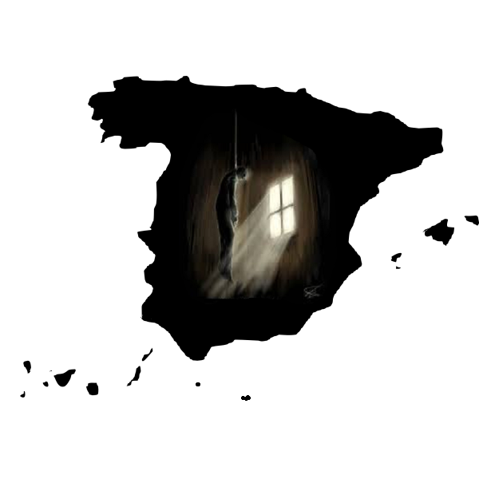

| Consecuencias de Actitudes Depresivas |
|---|
 | CONSECUENCIA |
|  | En los casos más graves, una persona con depresión puede llegar hasta el intento de suicido. |
| Esa falta de autoestima, ese creer que no valemos nada y ese dejarnos abandonar puede hacer que nos aislemos socialmente, lo que puede empeorar el sentimiento de soledad. |
 | Dolores de cabeza, a los dolores musculares o al cansancio se le suman los efectos secundarios de los antidepresivos, cuando finalmente nos ponemos en tratamiento. |
| Debilita nuestro sistema inmunitario, por lo que también está asociada a numerosas enfermedades, infecciones y hasta problemas cardiovasculares. |
| Perder amigos, parejas rotas, relaciones familiares destrozadas hasta quedarnos sin trabajo y con un montón de problemas económicos. |